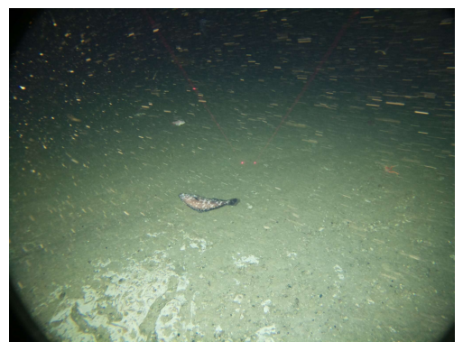

!pip install fsspec
!pip install numpy
!pip install opencv-python
Requirement already satisfied: fsspec in /opt/conda/lib/python3.11/site-packages (2023.9.2)
Requirement already satisfied: numpy in /opt/conda/lib/python3.11/site-packages (1.24.4)
Requirement already satisfied: opencv-python in /opt/conda/lib/python3.11/site-packages (4.11.0.86)
Requirement already satisfied: numpy>=1.21.2 in /opt/conda/lib/python3.11/site-packages (from opencv-python) (1.24.4)
import cv2
from datetime import datetime
import fsspec
import os
import re
import requests
import warnings
def find_uncabled_files(site: str, begin_datetime: datetime, end_datetime: datetime, verbose: bool = False) -> list:
"""
Find recovered CAMDS files between two datetimes associated with a particular site.
This function does not care about deployment limits.
:param site: An 8-character OOI designator for an uncabled site that has a CAMDS.
:param begin_datetime: The beginning of the timespan of interest.
:param end_datetime: The ending of the timespan of interest.
:param verbose: If True, will notify the user if there are no files associated with a particular deployment.
:return: A pythonic list of remote urls.
"""
remote = fsspec.filesystem('http')
base_dir = f'https://rawdata.oceanobservatories.org/files/{site.upper()}/'
dirs = remote.glob(base_dir + '*')
depdirs = [d for d in dirs if 'R0' in d]
foi = []
for depdir in depdirs:
files = remote.glob(depdir + 'cg_data/dcl37/camds/*.jpg')
if len(files) == 0:
files = remote.glob(depdir + 'cg_data/dcl37/camds/*.png')
if len(files) == 0:
if verbose is True:
warnings.warn(f'No files found in {depdir}.')
continue
for file in files:
filename = os.path.basename(file)
filedt = datetime.strptime(re.findall('(\d{8}T\d{6})',filename)[0], '%Y%m%dT%H%M%S')
if begin_datetime <= filedt <= end_datetime:
foi.append(file)
return foi
def download_files(urls: list, save_dir: os.path.abspath = os.path.join(os.getcwd(), 'files'), overwrite:bool = False) -> list:
"""
Download files from remote urls.
:param urls: A list of urls generated by find_uncabled_files.
:param save_dir: A location to save files. By default it is the ooi-data-explorations/python/examples/camds directory.
:param overwrite: If True, previously downloaded files will be overwritten.
:return: A list of local files.
"""
local_files = []
os.makedirs(save_dir, exist_ok=True)
for url in urls:
filename = os.path.basename(url)
filepath = os.path.join(save_dir, filename)
if os.path.exists(filepath) and overwrite is False:
local_files.append(filepath)
continue
data = requests.get(url, stream = True).content
with open(filepath,'wb') as writer:
writer.write(data)
local_files.append(filepath)
return local_files
def open_image(filepath: os.path.abspath) -> object:
"""
Open a local file as an opencv object.
:param filepath: The local filepath of the image.
:return: An opencv image object.
"""
im = cv2.imread(filepath)
return im
def resize(im: object, scale: float = 0.5) -> object:
"""
Resize the image.
:param im: An opencv image object.
:param scale: The scale at which to resize.
:return: The resized opencv image object.
"""
im = cv2.resize(im,(0,0), fx = scale, fy = scale)
return im
def timestamp_image(im: object, dtstr, position: tuple = (50,100), font: int = cv2.FONT_HERSHEY_SIMPLEX, size:float = 1.5, color:tuple = (255,255,255), thickness:float or int = 2, alias: int = cv2.LINE_AA):
"""
Timestamp an opencv image object.
:param im: An opencv image object.
:param dtstr: The timestamp string.
:param position: A tuple dictating the position of the text.
:param font: An integer indicating the font to use.
:param size: The size of the text.
:param color: The color of the text.
:param thickness: The thickness of the text.
:param alias: Alias status of the text.
:return: The opencv image object timestamped.
"""
im = cv2.putText(im, dtstr, position, font, size, color, thickness, alias)
return im
def build_timelapse(local_files: list, filename: os.path.abspath, fps: int = 30, fourcc: object = cv2.VideoWriter_fourcc(*'mp4v')) -> None:
"""
Build a timelapse from local files.
:param local_files: A list of local image files.
:param filename: A filepath/filename to save the timelapse.
:param fps: Number of frames per second.
:param fourcc: Fourcc conditions for writing video. Default is .mp4v.
"""
init = open_image(local_files[0])
height, width, _ = init.shape
timelapse = cv2.VideoWriter(filename, fourcc, fps, (width, height))
for file in local_files:
_dtstr = re.findall('(\d{8}T\d{6})',file)[0]
dt = datetime.strptime(_dtstr,'%Y%m%dT%H%M%S')
dtstr = dt.strftime('%Y-%m-%dT%H:%M:%S') + 'Z'
im = open_image(file)
im = timestamp_image(im, dtstr)
timelapse.write(im)
timelapse.release()
site = 'CE09OSSM'
begin_datetime = datetime(2023,6,1)
end_datetime = datetime(2023,6,30,23,59,59)
remote_files = find_uncabled_files(site, begin_datetime,end_datetime)
%%time
local_files = download_files(remote_files)
CPU times: user 1.13 ms, sys: 8.11 ms, total: 9.24 ms
Wall time: 108 ms
import matplotlib.pyplot as plt
import matplotlib.image as mpimg
img = mpimg.imread(local_files[323])
plt.imshow(img)
plt.axis('off') # Optional: removes axis labels and ticks
plt.show()

%%time
filename = f'{site}.mp4'
build_timelapse(local_files, filename = os.path.join(os.getcwd(), filename), fps = 10)
CPU times: user 25.4 s, sys: 257 ms, total: 25.6 s
Wall time: 26.7 s